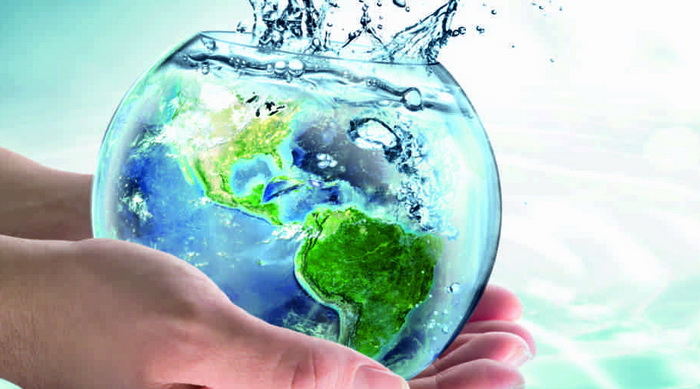

Uso consciente de água
A água é um recurso fundamental para a sobrevivência do ser humano. Ainda que 70% do planeta Terra seja coberto por água, apenas 1% desse volume é considerado potável. Da pequena parte hídrica que é apropriada para consumo humano, 12% fica no Brasil, sendo 70% dessa água doce concentrada na Bacia Amazônica. O restante está distribuído de forma desigual - o Nordeste, por exemplo, possui apenas 5% das reservas brasileiras de água doce, sendo que boa parte desse volume é subterrâneo e com alto teor de sal. As reservas de água doce estão distribuídas de modo desigual em todo o mundo e, além disso, são constantemente ameaçadas de escassez e contaminação. Tudo isso faz com que seja muito importante praticar o consumo consciente de água.
Praticar o consumo consciente de água não significa deixar de usar o recurso, mas sim repensar as suas formas de uso da água. Evitar desperdícios, reduzir o consumo sempre que possível, fazer a captação da água da chuva e reaproveitar a água cinza gerada pelo chuveiro e pela máquina de lavar roupas são algumas atitudes que podem ser tomadas para ter um consumo consciente da água.
Essas são formas de poupar a água potável do planeta e de ajudar a preservar os mananciais, além de economizar com a conta de água. Outra atitude de consumo consciente de água é estar atento ao gasto hídrico dos produtos e serviços que você consome. Esse mapeamento da quantidade de água que a sua rotina de vida consome é chamado de pegada hídrica, que representa o volume total de água doce que é utilizado para produzir os bens e serviços consumidos por um indivíduo - a mesma conta também pode ser aplicada a comunidades ou empresas.